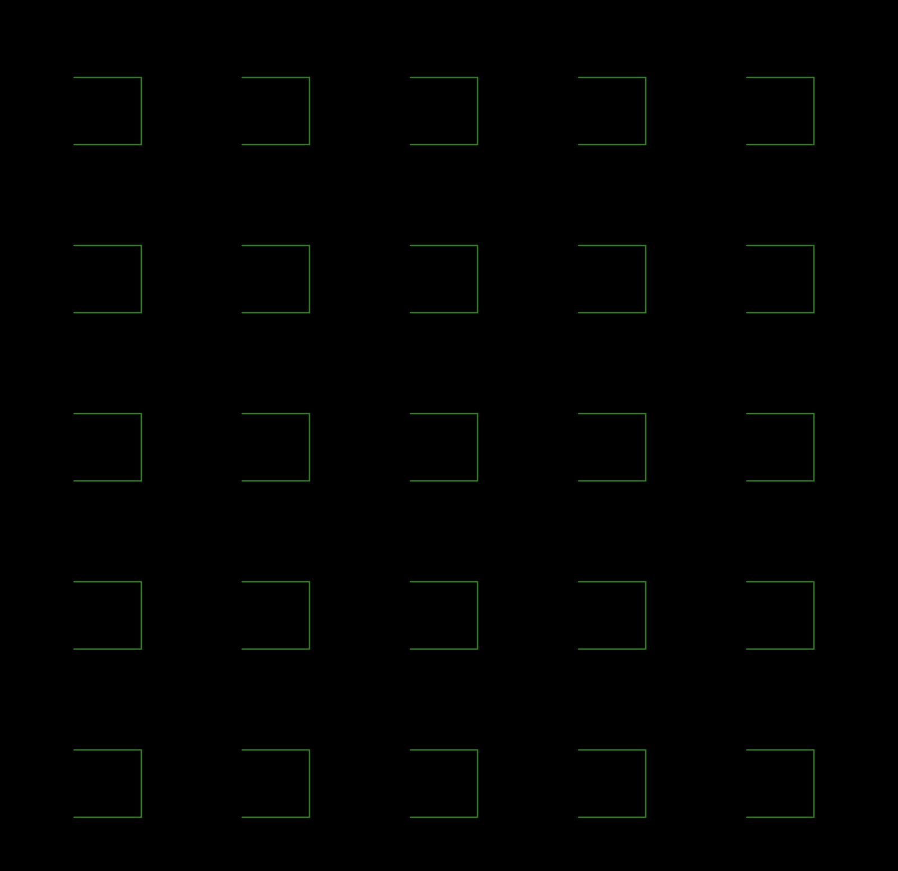
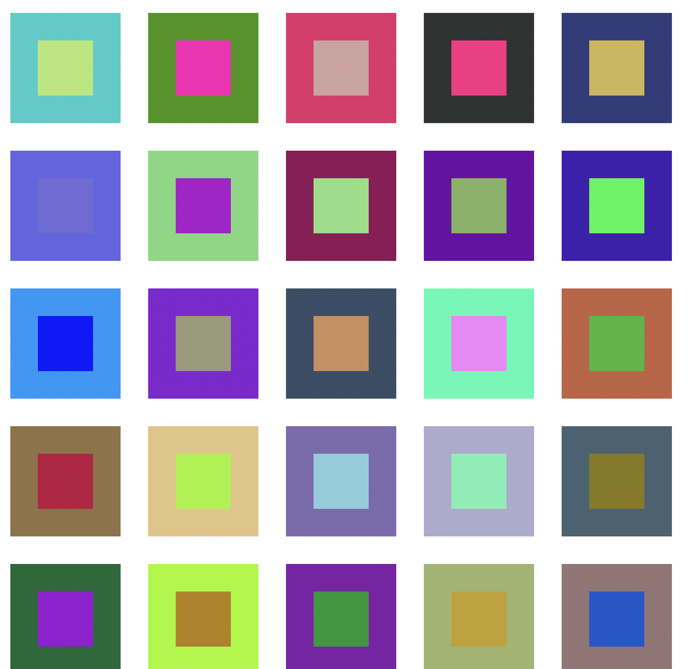
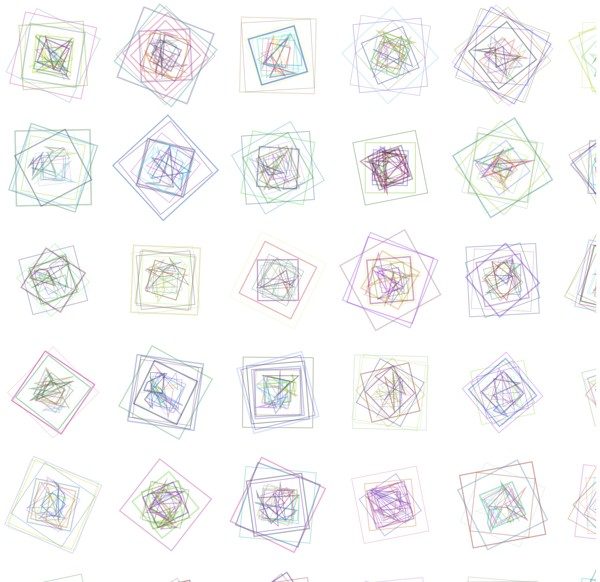
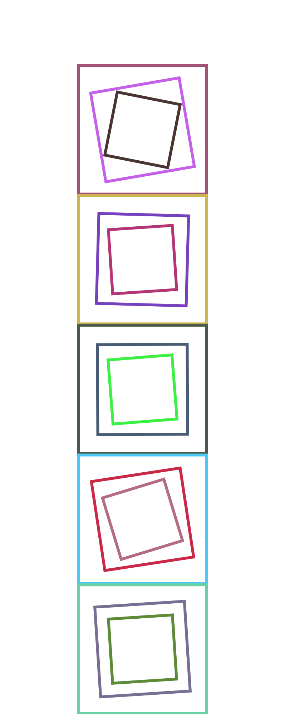
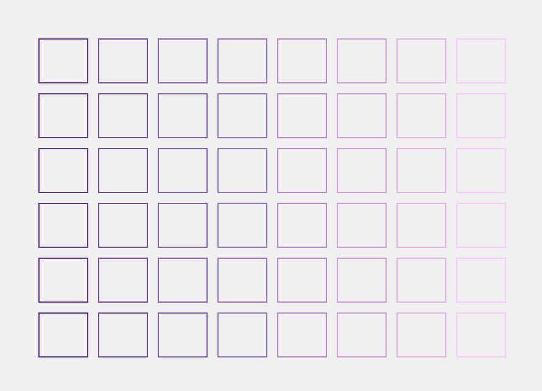
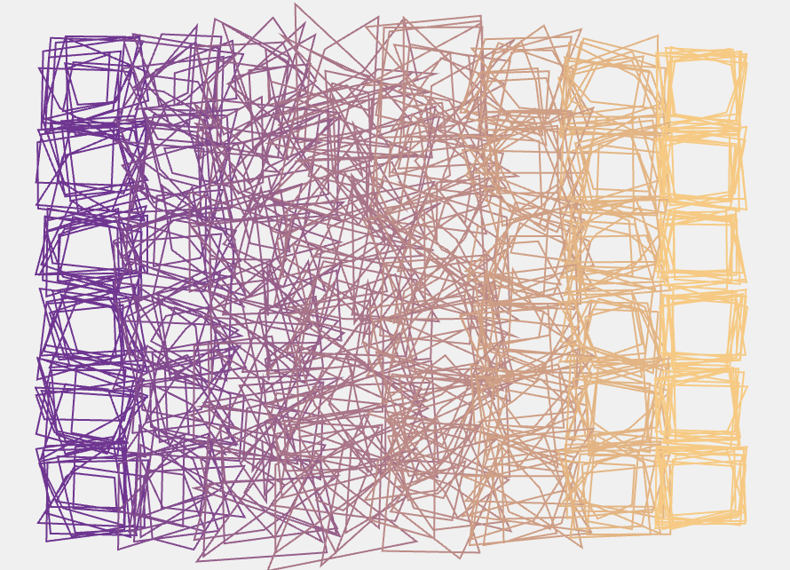
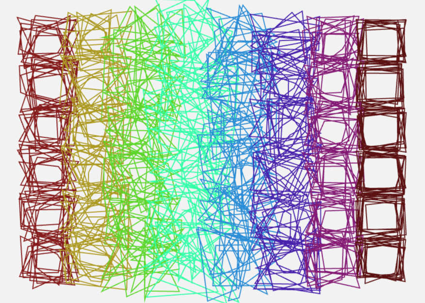
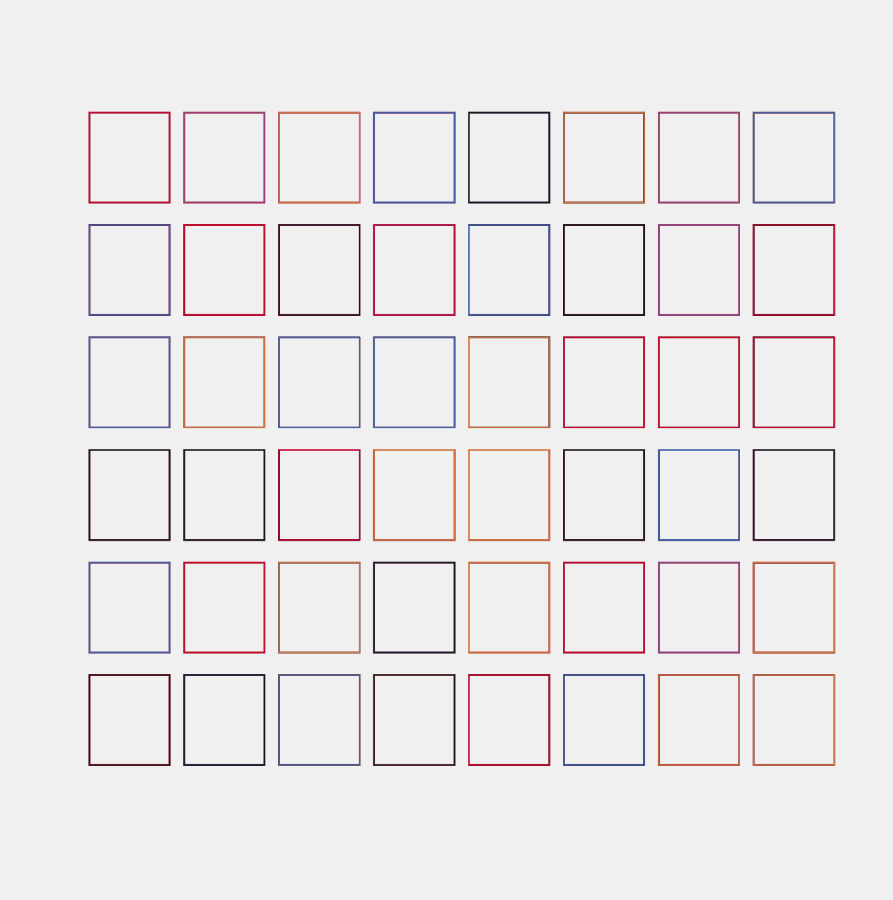
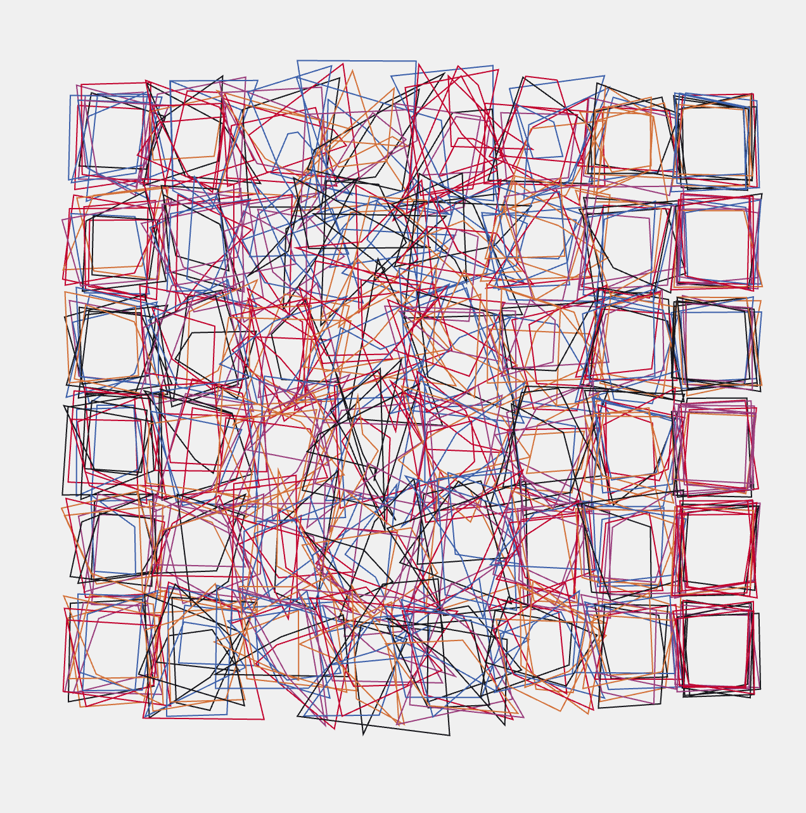

RE-CREATION | Vera Molnar
Our group chose to work with Vera Molnar’s Structure de quadrilatères from 1988. The artwork was made using a plotter drawing—likely ink on paper—generated with early computer programming. There are several different versions or pieces under this name, which led to some confusion at first about whether it was really hers.
What I liked about the work, and why our group chose to work with and re-code it, is how “simple” the individual components are, but how interesting they look together in the end. At first glance, it looks very organized and structured, but when you look more closely, there are slight shifts and irregularities that make the piece feel more alive.
In Molnar’s work, the balance between order and disorder is a central theme, which I also really liked. During re-coding, I got to play around with adding randomness to certain parameters in the code, whether the colours or the individual points of the quadrilaterals. From what I read, Molnar often added 1% disorder to her work to introduce small irregularities. She believed that coincidence can show the artist what they might do or follow—things that, without chance, might not have come to mind. This approach is very typical in generative art.
In our group, we made versions of these grids and added interactivity, which was quite interesting, because even the slightest changes can make the whole thing look completely different. I think in the next step I’ll continue playing with the camera interaction and further integrating more randomness, as for us in spatial design everything we select from colour to material always has a reason and we can’t really add anything without an intention, so I think I have to let go of trying to make everything look pretty and make sense out of it and rather be open to the process.




In the first step, I tried to program squares, as I've never really programmed before, this was quite difficult at first.
In the first image, I used a code by Eva that originally worked with circles. I replaced all the "circle" commands with "square," but quickly realized that it was more complicated than I had expected.
That’s why, in the second image, I created my own colorful squares from scratch, placing them inside other squares of different colors.
Since Vera Molnar often works with intentional irregularities ("noise") and overlays in her pieces, I asked ChatGPT in the third image to generate a fitting code for me.
Based on that, I gradually developed a simplified version, which is shown in the fourth image.



As a group, we then looked at our different works and decided to use a shared foundation for the interactions.
This way, if everyone managed to include an interaction or animation, we could combine our results into a collective project.
We chose to use Nune’s code as the base, as she had captured Vera Molnar’s style particularly well.
I first experimented with the colors, since Nune — like Molnar — had used random color generation.
In the second step, I switched the color mode from RGB to HSB (Hue, Saturation, Brightness), which opened up exciting new possibilities when experimenting and interacting with the mouse cursor.


I then also tried to add an interaction – specifically, the HandPose interaction.
After a lot of trial and error and many questions to ChatGPT, this is my current progress: the camera is activated, and the grid reacts, but it already seems to respond to high contrast in the image. Even a black cabinet in the background triggers movement.
That’s why, as the next step, I plan to go through the ml5 tutorial again, step by step.
My plan is to first reduce the large number of hand points to a single point, and then try to combine the HandPose code with Nune’s code.
USE OF CHATPGT: In this sprint, I mainly used ChatGPT to understand coding terminology and get a grasp of how code is structured, including common mistakes to avoid.
I also used it while writing code — not just to generate solutions, but more as a tool to help me debug. Whenever something didn’t work, I’d ask, “What’s wrong with my code, and why?”
Even when ChatGPT gave me working examples, I would follow up by asking for detailed explanations of each step. For the first few sketches this was less the case, but then especially for the camera activated part I had to ask alot.
So yes, I used ChatGPT a lot — but I made an effort to understand the logic behind every part along the way.